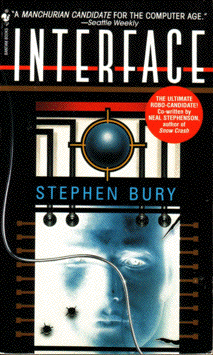

Interfaceby Stephen Bury
publisher: Bantam Books
Fiction, 632 pages | 
(book cover art, Copyright ©1995 Bruce Jensen)
Used with Permission. |
Return to the Book MenuPrevious|Next
Description:
Governor Cozzano has just had a devastating stroke that has seriously impared his brain. But is that going to prevent him from running for president? Of course not. A team of medical researchers has found a way to stimulate his brain with a computer that taps into minute-by-minute polling. He may be the unbeatable candidate ÑÊexcept he hasn't been feeling like himself lately.
Recommended for: people interested in presidential politics, future doctors, people who wonder about the union of man and machine.
Did-you-read questions:
Deadline: February 1, 2005.
These should be easy questions, but you should have the questions ready and keep an eye out during your reading. Each question should be answered with 1-2 sentences.
Note: these questions are not probably not the most important part of the book! Your essay will not have to cover these questions!
- What does Elenor find in the Volvo at her old house?
- What does Mr. Banerjee say a lot?
- What event (seen on TV) causes the demise of Erwin Dudley Strang's political career?
- Who decides to pay (much) more attention to politics as a result of his new wristwatch?
- What is the author's nickname for Jeremiah Freel?
Report Questions:Deadline: Peer Review Session on February 8, 2005; paper due February 10, 2005.
You should write a 3 - 4 page essay on one of the following questions. Your essay should include examples and references to the book, unless otherwise specified. Page number references are sufficient for citing material from the primary book. If you use outside materials, cite your sources in full. If you would rather write on a different topic, you may, but clear it with Mr. Howe or Ms. Sullivan first.
- Do you think that Eleanor will do a good job in her new position at the end of the book? Use examples to explain why you think she will or won't.
- How does the implant-based manipulation of Cozzano compare and contrast to the run-of-the-mill "managing" of him as a political candidate?
- What is your opinion of Dr. Radhakrishnan's motives and actions? Do you think that the medical breakthroughs he is pursuing are worth cutting some corners to find?
- Would you have voted for Cozzano? You might answer this as somebody who didn't know about his secrets and/or as somebody who does....
Graphic and Presentation:
Deadline: February 21 - March 3, 2005.You will give a 10 minute presentation on both of the following:
- Convince your peers that they should (or should not) read this book. (This may include a brief summary of the book.) Give examples of what was cool or worthwhile in the book, and what you got out of it (or didn't).
- Describe a (realistic) science idea that you learned about in this book, citing information from at least 2 external sources (other than the dictionary). If you would like help choosing or understanding an idea from your book, you are invited to come talk to Mr. Howe or Ms. Sullivan.
Note: This presentation should not be just a reading of your paper!Along with this presentation, you should have a graphic that will go with it. A Power Point presentation is recommended, but if you have a special idea for a something else, such as a model, an original video presentation, or a well done drawing/ painting/ sculpture/ etc., you may do so, provided it involves a similar level of effort and polish. Speak to Mr. Howe or Ms. Sullivan first if you are considering an alternate graphic format to the Power Point.
Return to the Book MenuPrevious|Next